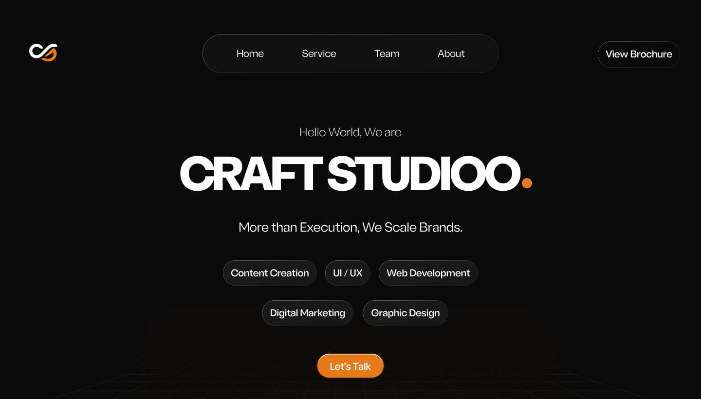
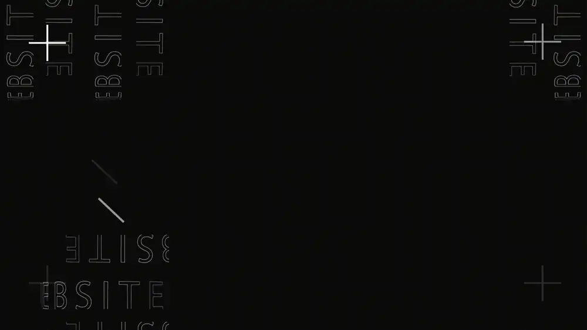
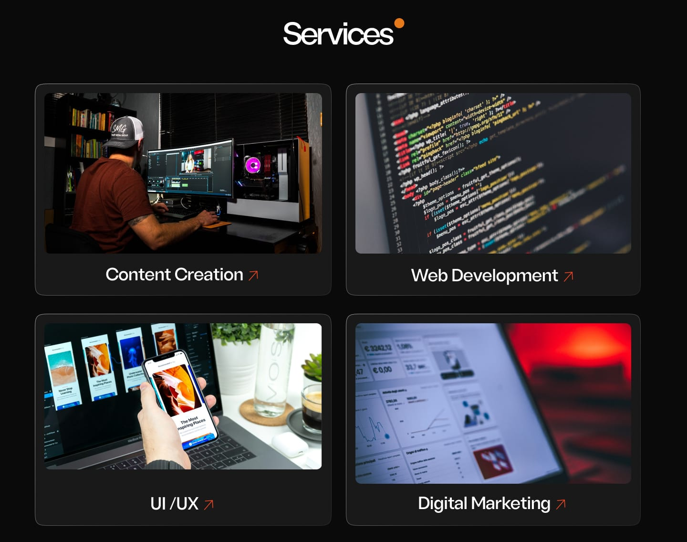
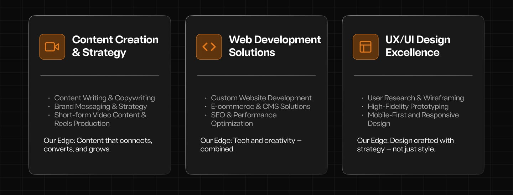
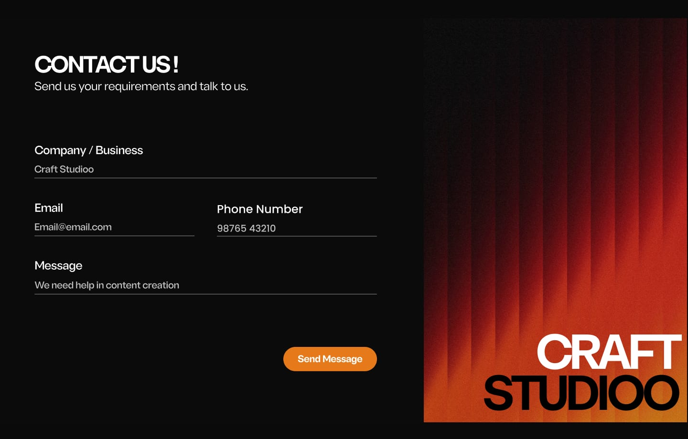
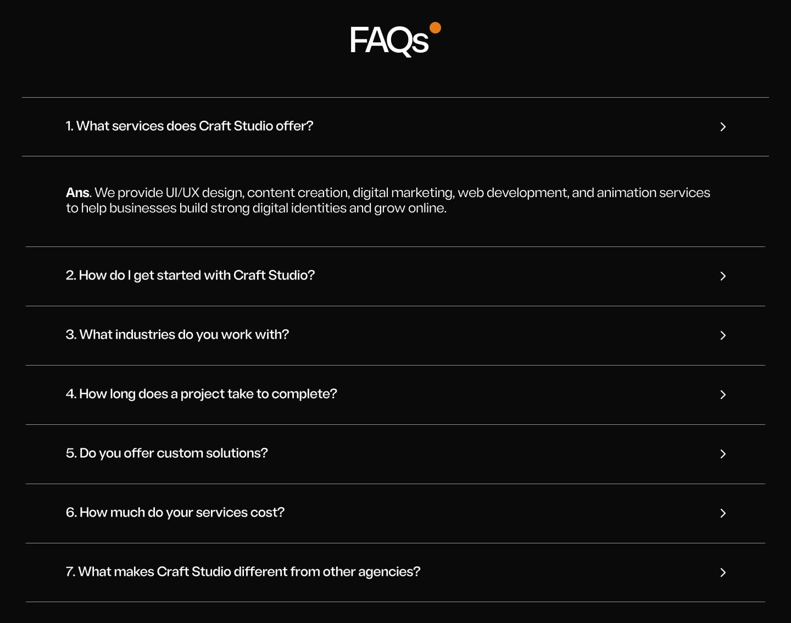
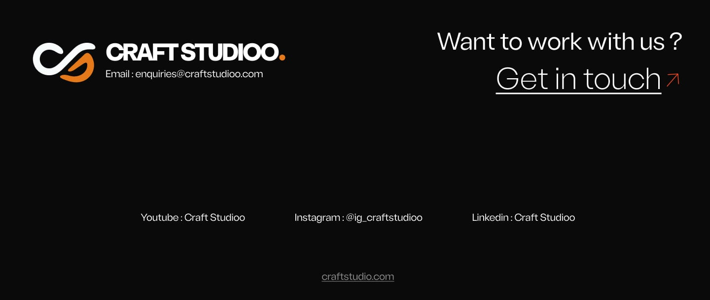

01
One clear next step
Five service chips show everything the agency does at a glance. "Let's Talk" is the only orange button on screen, so there's one obvious action.

Craftstudioo had clients, a team and real work, but nowhere to send a new lead. The site brought in 6 new customers in its first month.
Craftstudioo had clients, a team and work to show. What it didn't have was a website, so every new lead had to take the agency at its word.
The goal: one page that answers three questions fast.
Five service chips show everything the agency does at a glance. "Let's Talk" is the only orange button on screen, so there's one obvious action.

I made the "WEBSITE" intro animation so the page proves the agency's skill before anyone reads a word.

Real client logos sit right under the hero, in grey, so they build trust without pulling attention from the action.
Four image cards in a 2×2 grid. Each photo explains its service faster than a sentence, and the ↗ arrow shows it opens.

Three pillars, each with the same structure and one "Our Edge" line. That line answers the question every client has: why you?

Four fields. Email and phone sit side by side because both answer "how do we reach you?" The placeholder shows what to write, so nobody stares at an empty box.

Cost, timeline and process are answered in the FAQs, folded away so the page stays short.

The page opens with "Let's Talk" and closes with "Get in touch". The first and last things people see are both a way to start.

Orange is used only where it matters: actions, the key phrase, and the dot from the logo. Everything else stays quiet.
6 new customers in the first month after launch. I kept refining the site through 2025. Later the whole team got placed in full-time jobs, so the agency closed and the site went offline.
“The website looks great, man. It presents our agency really well and makes our work feel more professional. And bringing in 6 clients in our first month is a solid achievement. I think the way you've presented our services has made a real difference.”
“Honestly, you've done a great job with the website. It's clean, informative, and easy to understand. What I appreciate most is that your work has gone beyond design. Getting 6 clients in our first month is a great start for us, and you've played a big part in that.”
An agency landing page is a sales conversation. Each section has to answer the next question a client would ask, in the order they'd ask it.